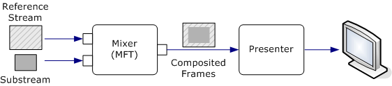
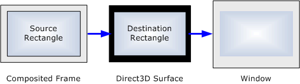
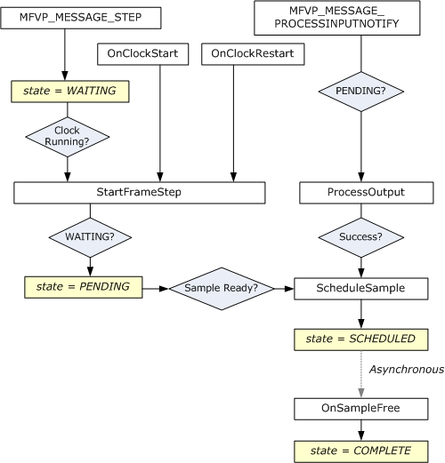

[The component described on this page, Enhanced Video Renderer, is a legacy feature. It has been superseded by the Simple Video Renderer (SVR) exposed through the MediaPlayer and IMFMediaEngine components. To play video content you should send data into one of these components and allow them to instantiate the new video renderer. These components have been optimized for Windows 10 and Windows 11. Microsoft strongly recommends that new code use MediaPlayer or the lower level IMFMediaEngine APIs to play video media in Windows instead of the EVR, when possible. Microsoft suggests that existing code that uses the legacy APIs be rewritten to use the new APIs if possible.]
This article describes how to write a custom presenter for the enhanced video renderer (EVR). A custom presenter can be used with both DirectShow and Media Foundation; the interfaces and object model are the same for both technologies, although the exact sequence of operations might vary.
The example code in this topic is adapted from the EVRPresenter Sample, which is provided in the Windows SDK.
This topic contains the following sections:
Before writing a custom presenter, you should be familiar with the following technologies:
This section contains an overview the presenter object model and interfaces.
The EVR uses two plug-in components to render video: the mixer and the presenter. The mixer blends the video streams and deinterlaces the video if needed. The presenter draws (or presents) the video onto the display and schedules when each frame is drawn. Applications can replace either of these objects with a custom implementation.
The EVR has one or more input streams, and the mixer has a corresponding number of input streams. Stream 0 is always the reference stream. The other streams are substreams, which the mixer alpha-blends onto the reference stream. The reference stream determines the master frame-rate for the composited video. For each reference frame, the mixer takes the most recent frame from each substream, alpha-blends them onto the reference frame, and outputs a single composited frame. The mixer also performs deinterlacing and color conversion from YUV to RGB if needed. The EVR always inserts the mixer into the video pipeline, regardless of the number of input streams or the video format. The following image illustrates this process.

The presenter performs the following tasks:
At any time, the presenter is in one of following states:
In the example code in this topic, the presenter state is represented by an enumeration:
enum RENDER_STATE
{
RENDER_STATE_STARTED = 1,
RENDER_STATE_STOPPED,
RENDER_STATE_PAUSED,
RENDER_STATE_SHUTDOWN, // Initial state.
};
Some operations are not valid while the presenter is in the shutdown state. The example code checks for this state by calling a helper method:
HRESULT CheckShutdown() const
{
if (m_RenderState == RENDER_STATE_SHUTDOWN)
{
return MF_E_SHUTDOWN;
}
else
{
return S_OK;
}
}
A presenter is required to implement the following interfaces:
| Interface | Description |
|---|---|
| IMFClockStateSink | Notifies the presenter when the EVR's clock changes state. See Implementing IMFClockStateSink. |
| IMFGetService | Provides a way for the application and other components in the pipeline to get interfaces from the presenter. |
| IMFTopologyServiceLookupClient | Enables the presenter to get interfaces from the EVR or the mixer. See Implementing IMFTopologyServiceLookupClient. |
| IMFVideoDeviceID | Ensures that the presenter and the mixer use compatible technologies. See Implementing IMFVideoDeviceID. |
| IMFVideoPresenter | Processes messages from the EVR. See Implementing IMFVideoPresenter. |
Â
The following interfaces are optional:
| Interface | Description |
|---|---|
| IEVRTrustedVideoPlugin | Enables the presenter to work with protected media. Implement this interface if your presenter is a trusted component designed to work in the protected media path (PMP). |
| IMFRateSupport | Reports the range of playback rates that the presenter supports. See Implementing IMFRateSupport. |
| IMFVideoPositionMapper | Maps coordinates on the output video frame to coordinates on the input video frame. |
| IQualProp | Reports performance information. The EVR uses this information for quality-control management. This interface is documented in the DirectShow SDK. |
Â
You can also provide interfaces for the application to communicate with the presenter. The standard presenter implements the IMFVideoDisplayControl interface for this purpose. You can implement this interface or define your own. The application obtains interfaces from the presenter by calling IMFGetService::GetService on the EVR. When the service GUID is MR_VIDEO_RENDER_SERVICE, the EVR passes the GetService request to the presenter.
The IMFVideoDeviceID interface contains one method, GetDeviceID, which returns a device GUID. The device GUID ensures that the presenter and the mixer use compatible technologies. If the device GUIDs do not match, the EVR fails to initialize.
The standard mixer and presenter both use Direct3D 9, with the device GUID equal to IID_IDirect3DDevice9. If you intend to use your custom presenter with the standard mixer, the presenter's device GUID must be IID_IDirect3DDevice9. If you replace both components, you could define a new device GUID. For the remainder of this article, it is assumed that the presenter uses Direct3D 9. Here is the standard implementation of GetDeviceID:
HRESULT EVRCustomPresenter::GetDeviceID(IID* pDeviceID)
{
if (pDeviceID == NULL)
{
return E_POINTER;
}
*pDeviceID = __uuidof(IDirect3DDevice9);
return S_OK;
}
The method should succeed even when the presenter is shut down.
The IMFTopologyServiceLookupClient interface enables the presenter to get interface pointers from the EVR and from the mixer as follows:
The LookupService method is similar to the IMFGetService::GetService method. Both methods take a service GUID and an interface identifier (IID) as input, but LookupService returns an array of interface pointers, while GetService returns a single pointer. In practice, however, you can always set the array size to 1. The object queried depends on the service GUID:
In your implementation of InitServicePointers, get the following interfaces from the EVR:
| EVR Interface | Description |
|---|---|
| IMediaEventSink | Provides a way for the presenter to send messages to the EVR. This interface is defined in the DirectShow SDK, so the messages follow the pattern for DirectShow events, not Media Foundation events. |
| IMFClock | Represents the EVR's clock. The presenter uses this interface to schedule samples for presentation. The EVR can run without a clock, so this interface might not be available. If not, ignore the error code from LookupService. The clock also implements the IMFTimer interface. In the Media Foundation pipeline, the clock implements the IMFPresentationClock interface. It does not implement this interface in DirectShow. |
Â
Get the following interfaces from the mixer:
| Mixer Interface | Description |
|---|---|
| IMFTransform | Enables the presenter to communicate with the mixer. |
| IMFVideoDeviceID | Enables the presenter to validate the mixer's device GUID. |
Â
The following code implements the InitServicePointers method :
HRESULT EVRCustomPresenter::InitServicePointers(
IMFTopologyServiceLookup *pLookup
)
{
if (pLookup == NULL)
{
return E_POINTER;
}
HRESULT hr = S_OK;
DWORD dwObjectCount = 0;
EnterCriticalSection(&m_ObjectLock);
// Do not allow initializing when playing or paused.
if (IsActive())
{
hr = MF_E_INVALIDREQUEST;
goto done;
}
SafeRelease(&m_pClock);
SafeRelease(&m_pMixer);
SafeRelease(&m_pMediaEventSink);
// Ask for the clock. Optional, because the EVR might not have a clock.
dwObjectCount = 1;
(void)pLookup->LookupService(
MF_SERVICE_LOOKUP_GLOBAL, // Not used.
0, // Reserved.
MR_VIDEO_RENDER_SERVICE, // Service to look up.
IID_PPV_ARGS(&m_pClock), // Interface to retrieve.
&dwObjectCount // Number of elements retrieved.
);
// Ask for the mixer. (Required.)
dwObjectCount = 1;
hr = pLookup->LookupService(
MF_SERVICE_LOOKUP_GLOBAL, 0,
MR_VIDEO_MIXER_SERVICE, IID_PPV_ARGS(&m_pMixer), &dwObjectCount
);
if (FAILED(hr))
{
goto done;
}
// Make sure that we can work with this mixer.
hr = ConfigureMixer(m_pMixer);
if (FAILED(hr))
{
goto done;
}
// Ask for the EVR's event-sink interface. (Required.)
dwObjectCount = 1;
hr = pLookup->LookupService(
MF_SERVICE_LOOKUP_GLOBAL, 0,
MR_VIDEO_RENDER_SERVICE, IID_PPV_ARGS(&m_pMediaEventSink),
&dwObjectCount
);
if (FAILED(hr))
{
goto done;
}
// Successfully initialized. Set the state to "stopped."
m_RenderState = RENDER_STATE_STOPPED;
done:
LeaveCriticalSection(&m_ObjectLock);
return hr;
}
When the interface pointers obtained from LookupService are no longer valid, the EVR calls IMFTopologyServiceLookupClient::ReleaseServicePointers. Inside this method, release all interface pointers and set the presenter state to shut down:
HRESULT EVRCustomPresenter::ReleaseServicePointers()
{
// Enter the shut-down state.
EnterCriticalSection(&m_ObjectLock);
m_RenderState = RENDER_STATE_SHUTDOWN;
LeaveCriticalSection(&m_ObjectLock);
// Flush any samples that were scheduled.
Flush();
// Clear the media type and release related resources.
SetMediaType(NULL);
// Release all services that were acquired from InitServicePointers.
SafeRelease(&m_pClock);
SafeRelease(&m_pMixer);
SafeRelease(&m_pMediaEventSink);
return S_OK;
}
The EVR calls ReleaseServicePointers for various reasons, including:
During the lifetime of the presenter, the EVR might call InitServicePointers and ReleaseServicePointers several times.
The IMFVideoPresenter interface inherits IMFClockStateSink and adds two methods:
| Method | Description |
|---|---|
| GetCurrentMediaType | Returns the media type of the composited video frames. |
| ProcessMessage | Signals the presenter to perform various actions. |
Â
The GetCurrentMediaType method returns the presenter's media type. (For details about setting the media type, see Negotiating Formats.) The media type is returned as an IMFVideoMediaType interface pointer. The following example assumes that the presenter stores the media type as an IMFMediaType pointer. To get the IMFVideoMediaType interface from the media type, call QueryInterface:
HRESULT EVRCustomPresenter::GetCurrentMediaType(
IMFVideoMediaType** ppMediaType
)
{
HRESULT hr = S_OK;
if (ppMediaType == NULL)
{
return E_POINTER;
}
*ppMediaType = NULL;
EnterCriticalSection(&m_ObjectLock);
hr = CheckShutdown();
if (FAILED(hr))
{
goto done;
}
if (m_pMediaType == NULL)
{
hr = MF_E_NOT_INITIALIZED;
goto done;
}
hr = m_pMediaType->QueryInterface(IID_PPV_ARGS(ppMediaType));
done:
LeaveCriticalSection(&m_ObjectLock);
return hr;
}
The ProcessMessage method is the primary mechanism for the EVR to communicate with the presenter. The following messages are defined. The details of implementing each message are given in the remainder of this topic.
| Message | Description |
|---|---|
| MFVP_MESSAGE_INVALIDATEMEDIATYPE | The mixer's output media type is invalid. The presenter should negotiate a new media type with the mixer. See Negotiating Formats. |
| MFVP_MESSAGE_BEGINSTREAMING | Streaming has started. No particular action is required by this message, but you can use it to allocate resources. |
| MFVP_MESSAGE_ENDSTREAMING | Streaming has ended. Release any resources that you allocated in response to the MFVP_MESSAGE_BEGINSTREAMING message. |
| MFVP_MESSAGE_PROCESSINPUTNOTIFY | The mixer has received a new input sample and might be able to generate a new output frame. The presenter should call IMFTransform::ProcessOutput on the mixer. See Processing Output. |
| MFVP_MESSAGE_ENDOFSTREAM | The presentation has ended. See End of Stream. |
| MFVP_MESSAGE_FLUSH | The EVR is flushing the data in its rendering pipeline. The presenter should discard any video frames that are scheduled for presentation. |
| MFVP_MESSAGE_STEP | Requests the presenter to step forward N frames. The presenter should discard the next N-1 frames and display the Nth frame. See Frame Stepping. |
| MFVP_MESSAGE_CANCELSTEP | Cancels frame stepping. |
Â
The presenter must implement the IMFClockStateSink interface as part of its implementation of IMFVideoPresenter, which inherits IMFClockStateSink. The EVR uses this interface to notify the presenter whenever the EVR's clock changes state. For more information about the clock states, see Presentation Clock.
Here are some guidelines for implementing the methods in this interface. All of the methods should fail if the presenter is shut down.
| Method | Description |
|---|---|
| OnClockStart | Set the presenter state to started.If the llClockStartOffset is not PRESENTATION_CURRENT_POSITION, flush the presenter's queue of samples. (This is equivalent to receiving an MFVP_MESSAGE_FLUSH message.)If a previous frame-step request is still pending, process the request (see Frame Stepping). Otherwise, try to process output from the mixer (see Processing Output. |
| OnClockStop | Set the presenter state to stopped.Flush the presenter's queue of samples.Cancel any pending frame-step operation. |
| OnClockPause | Set the presenter state to paused. |
| OnClockRestart | Treat the same as OnClockStart but do not flush the queue of samples. |
| OnClockSetRate | If the rate is changing from zero to nonzero, cancel frame stepping.Store the new clock rate. The clock rate affects when samples are presented. For more information, see Scheduling Samples. |
Â
To support playback rates other than 1× speed, the presenter must implement the IMFRateSupport interface. Here are some guidelines for implementing the methods in this interface. All of the methods should fail after the presenter is shut down. For more information about this interface, see Rate Control.
| Value | Description |
|---|---|
| GetSlowestRate | Return zero to indicate no minimum playback rate. |
| GetFastestRate | For non-thinned playback, the playback rate should not exceed the refresh rate of the monitor: maximum rate = refresh rate (Hz) / video frame rate (fps). The video frame rate is specified in the presenter's media type. For thinned playback, the playback rate is unbounded; return the value FLT_MAX. In practice, the source and the decoder will be the limiting factors during thinned playback. For reverse playback, return the negative of the maximum rate. |
| IsRateSupported | Return MF_E_UNSUPPORTED_RATE if the absolute value of flRate exceeds the presenter's maximum playback rate. Calculate the maximum playback rate as described for GetFastestRate. |
Â
The following example shows how to implement the GetFastestRate method:
float EVRCustomPresenter::GetMaxRate(BOOL bThin)
{
// Non-thinned:
// If we have a valid frame rate and a monitor refresh rate, the maximum
// playback rate is equal to the refresh rate. Otherwise, the maximum rate
// is unbounded (FLT_MAX).
// Thinned: The maximum rate is unbounded.
float fMaxRate = FLT_MAX;
MFRatio fps = { 0, 0 };
UINT MonitorRateHz = 0;
if (!bThin && (m_pMediaType != NULL))
{
GetFrameRate(m_pMediaType, &fps);
MonitorRateHz = m_pD3DPresentEngine->RefreshRate();
if (fps.Denominator && fps.Numerator && MonitorRateHz)
{
// Max Rate = Refresh Rate / Frame Rate
fMaxRate = (float)MulDiv(
MonitorRateHz, fps.Denominator, fps.Numerator);
}
}
return fMaxRate;
}
The previous example calls a helper method, GetMaxRate, to calculate the maximum forward playback rate:
The following example shows how to implement the IsRateSupported method:
HRESULT EVRCustomPresenter::IsRateSupported(
BOOL bThin,
float fRate,
float *pfNearestSupportedRate
)
{
EnterCriticalSection(&m_ObjectLock);
float fMaxRate = 0.0f;
float fNearestRate = fRate; // If we support fRate, that is the nearest.
HRESULT hr = CheckShutdown();
if (FAILED(hr))
{
goto done;
}
// Find the maximum forward rate.
// Note: We have no minimum rate (that is, we support anything down to 0).
fMaxRate = GetMaxRate(bThin);
if (fabsf(fRate) > fMaxRate)
{
// The (absolute) requested rate exceeds the maximum rate.
hr = MF_E_UNSUPPORTED_RATE;
// The nearest supported rate is fMaxRate.
fNearestRate = fMaxRate;
if (fRate < 0)
{
// Negative for reverse playback.
fNearestRate = -fNearestRate;
}
}
// Return the nearest supported rate.
if (pfNearestSupportedRate != NULL)
{
*pfNearestSupportedRate = fNearestRate;
}
done:
LeaveCriticalSection(&m_ObjectLock);
return hr;
}
The presenter must notify the EVR of various events. To do so, it uses the EVR's IMediaEventSink interface, obtained when the EVR calls the presenter's IMFTopologyServiceLookupClient::InitServicePointers method. (The IMediaEventSink interface is originally a DirectShow interface, but is used in both the DirectShow EVR and the Media Foundation.) The following code shows how to send an event to the EVR:
// NotifyEvent: Send an event to the EVR through its IMediaEventSink interface.
void NotifyEvent(long EventCode, LONG_PTR Param1, LONG_PTR Param2)
{
if (m_pMediaEventSink)
{
m_pMediaEventSink->Notify(EventCode, Param1, Param2);
}
}
The following table lists the events that the presenter sends, along with the event parameters.
| Event | Description |
|---|---|
| EC_COMPLETE | The presenter has finished rendering all frames after the MFVP_MESSAGE_ENDOFSTREAM message.Param1: HRESULT indicating the status of the operation.Param2: Not used.For more information, see End of Stream. |
| EC_DISPLAY_CHANGED | The Direct3D device has changed.Param1: Not used.Param2: Not used.For more information, see Managing the Direct3D Device. |
| EC_ERRORABORT | An error has occurred that requires streaming to stop.Param1: HRESULT indicating the error that occurred.Param2: Not used. |
| EC_PROCESSING_LATENCY | Specifies the amount of time that the presenter is taking to render each frame. (Optional.)Param1: Pointer to a constant LONGLONG value that contains the amount of time to process the frame, in 100-nanosecond units.Param2: Not used.For more information, see Processing Output. |
| EC_SAMPLE_LATENCY | Specifies the current lag time in rendering samples. If the value is positive, samples are behind schedule. If the value is negative, samples are ahead of schedule. (Optional.)Param1: Pointer to a constant LONGLONG value that contains the lag time, in 100-nanosecond units.Param2: Not used. |
| EC_SCRUB_TIME | Sent immediately after EC_STEP_COMPLETE if the playback rate is zero. This event contains the time stamp of the frame that was displayed.Param1: Lower 32 bits of the time stamp.Param2: Upper 32 bits of the time stamp.For more information, see Frame Stepping. |
| EC_STEP_COMPLETE | The presenter has completed or canceled a frame step.- Param1: Not used.- Param2: Not used.For more information, see Frame Stepping. Note: A previous version of the documentation described Param1 incorrectly. This parameter is not used for this event. |
Â
Whenever the presenter receives an MFVP_MESSAGE_INVALIDATEMEDIATYPE message from the EVR, it must set the output format on the mixer, as follows:
Call IMFTransform::GetOutputAvailableType on the mixer to get a possible output type. This type describes a format that the mixer can produce given the input streams and the video processing capabilities of the graphics device.
Check whether the presenter can use this media type as its rendering format. Here are some things to check, although your implementation might have its own requirements:
If the type is not acceptable, return to step 1 and get the mixer's next proposed type.
Create a new media type that is a clone of the original type and then change the following attributes:
To test whether the mixer will accept the modified output type, call IMFTransform::SetOutputType with the MFT_SET_TYPE_TEST_ONLY flag. If the mixer rejects the type, go back to step 1 and get the next type.
Allocate a pool of Direct3D surfaces, as described in Allocating Direct3D Surfaces. The mixer will use these surfaces when it draws the composited video frames.
Set the output type on the mixer by calling SetOutputType with no flags. If the first call to SetOutputType succeeded in step 4, the method should succeed again.
If the mixer runs out of types, the GetOutputAvailableType method returns MF_E_NO_MORE_TYPES. If the presenter cannot find a suitable output type for the mixer, the stream cannot be rendered. In that case, DirectShow or Media Foundation might try another stream format. Therefore, the presenter might receive several MFVP_MESSAGE_INVALIDATEMEDIATYPE messages in a row until a valid type is found.
The mixer automatically letterboxes the video, taking into account the pixel aspect ratio (PAR) of the source and destination. For best results, the surface width and height and the geometric aperture should be equal to the actual size that you want the video to appear on the display. The following image illustrates this process.

The following code shows the outline of the process. Some of the steps are placed in helper functions, the exact details of which will depend on the requirements of your presenter.
HRESULT EVRCustomPresenter::RenegotiateMediaType()
{
HRESULT hr = S_OK;
BOOL bFoundMediaType = FALSE;
IMFMediaType *pMixerType = NULL;
IMFMediaType *pOptimalType = NULL;
IMFVideoMediaType *pVideoType = NULL;
if (!m_pMixer)
{
return MF_E_INVALIDREQUEST;
}
// Loop through all of the mixer's proposed output types.
DWORD iTypeIndex = 0;
while (!bFoundMediaType && (hr != MF_E_NO_MORE_TYPES))
{
SafeRelease(&pMixerType);
SafeRelease(&pOptimalType);
// Step 1. Get the next media type supported by mixer.
hr = m_pMixer->GetOutputAvailableType(0, iTypeIndex++, &pMixerType);
if (FAILED(hr))
{
break;
}
// From now on, if anything in this loop fails, try the next type,
// until we succeed or the mixer runs out of types.
// Step 2. Check if we support this media type.
if (SUCCEEDED(hr))
{
// Note: None of the modifications that we make later in CreateOptimalVideoType
// will affect the suitability of the type, at least for us. (Possibly for the mixer.)
hr = IsMediaTypeSupported(pMixerType);
}
// Step 3. Adjust the mixer's type to match our requirements.
if (SUCCEEDED(hr))
{
hr = CreateOptimalVideoType(pMixerType, &pOptimalType);
}
// Step 4. Check if the mixer will accept this media type.
if (SUCCEEDED(hr))
{
hr = m_pMixer->SetOutputType(0, pOptimalType, MFT_SET_TYPE_TEST_ONLY);
}
// Step 5. Try to set the media type on ourselves.
if (SUCCEEDED(hr))
{
hr = SetMediaType(pOptimalType);
}
// Step 6. Set output media type on mixer.
if (SUCCEEDED(hr))
{
hr = m_pMixer->SetOutputType(0, pOptimalType, 0);
assert(SUCCEEDED(hr)); // This should succeed unless the MFT lied in the previous call.
// If something went wrong, clear the media type.
if (FAILED(hr))
{
SetMediaType(NULL);
}
}
if (SUCCEEDED(hr))
{
bFoundMediaType = TRUE;
}
}
SafeRelease(&pMixerType);
SafeRelease(&pOptimalType);
SafeRelease(&pVideoType);
return hr;
}
For more information about video media types, see Video Media Types.
The presenter creates the Direct3D device and handles any device loss during streaming. The presenter also hosts the Direct3D device manager, which provides a way for other components to use the same device. For example, the mixer uses the Direct3D device to mix substreams, deinterlace, and perform color adjustments. Decoders can use the Direct3D device for video-accelerated decoding. (For more information about video acceleration, see DirectX Video Acceleration 2.0.)
To set up the Direct3D device, perform the following steps:
If another pipeline component needs the device manager, it calls IMFGetService::GetService on the EVR, specifying MR_VIDEO_ACCELERATION_SERVICE for the service GUID. The EVR passes the request to the presenter. After the object gets the IDirect3DDeviceManager9 pointer, it can get a handle to the device by calling IDirect3DDeviceManager9::OpenDeviceHandle. When the object needs to use the device, it passes the device handle to the IDirect3DDeviceManager9::LockDevice method, which returns an IDirect3DDevice9 pointer.
After the device is created, if the presenter destroys the device and creates a new one, the presenter must call ResetDevice again. The ResetDevice method invalidates any existing device handles, which causes LockDevice to return DXVA2_E_NEW_VIDEO_DEVICE. This error code signals to other objects using the device that they should open a new device handle. For more information about using the device manager, see Direct3D Device Manager.
The presenter can create the device in windowed mode or full-screen exclusive mode. For windowed mode, you should provide a way for the application to specify the video window. The standard presenter implements the IMFVideoDisplayControl::SetVideoWindow method for this purpose. You must create the device when the presenter is first created. Typically, you won't know all of the device parameters at this time, such as the window or the back buffer format. You can create a temporary device and replace it later&#;just remember to call ResetDevice on the device manager.
If you create a new device, or if you call IDirect3DDevice9::Reset or IDirect3DDevice9Ex::ResetEx on an existing device, send an EC_DISPLAY_CHANGED event to the EVR. This event notifies the EVR to renegotiate the media type. The EVR ignores the event parameters for this event.
After the presenter sets the media type, it can allocate the Direct3D surfaces, which the mixer will use to write the video frames. The surface must match the presenter's media type:
The recommended way to allocate surfaces depends on whether the presenter runs windowed or full-screen.
If the Direct3D device is windowed, you can create several swap chains, each with a single back buffer. Using this approach, you can present each surface independently, because presenting one swap chain will not interfere with the other swap chains. The mixer can write data to a surface while another surface is scheduled for presentation.
First, decide how many swap chains to create. A minimum of three is recommended. For each swap chain, do the following:
In full-screen exclusive mode, the device cannot have more than one swap chain. This swap chain is created implicitly when you create the full-screen device. The swap chain can have more than one back buffer. Unfortunately, however, if you present one back buffer while you write to another back buffer in the same swap chain, there is no easy way to coordinate the two operations. This is because of the way Direct3D implements surface flipping. When you call Present, the graphics driver updates the surface pointers in graphics memory. If you are holding any IDirect3DSurface9 pointers when you call Present, they will point to different buffers after the Present call returns.
The simplest option is to create one video sample for the swap chain. If you choose this option, follow the same steps given for windowed mode. The only difference is that the sample queue contains a single video sample. Another option is to create offscreen surfaces and then blit them to the back buffer. The surfaces that you create must support the IDirectXVideoProcessor::VideoProcessBlt method, which the mixer uses to composite the output frames.
When the presenter first allocates the video samples, it places them in a queue. The presenter draws from this queue whenever it needs to get a new frame from the mixer. After the mixer outputs the frame, the presenter moves the sample into a second queue. The second queue is for samples that are waiting for their scheduled presentation times.
To make it easier to track the status of each sample, the video sample object implements the IMFTrackedSample interface. You can use this interface as follows:
Implement the IMFAsyncCallback interface in your presenter.
Before you place a sample in the scheduled queue, query the video sample object for the IMFTrackedSample interface.
Call IMFTrackedSample::SetAllocator with a pointer to your callback interface.
When the sample is ready for presentation, remove it from the scheduled queue, present it, and release all references to the sample.
The sample invokes the callback. (The sample object is not deleted in this case because it holds a reference count on itself until the callback is invoked.)
Inside the callback, return the sample to the available queue.
A presenter is not required to use IMFTrackedSample to track samples; you can implement any technique that works best for your design. One advantage of IMFTrackedSample is that you can move the presenter's scheduling and rendering functions into helper objects, and these objects do not need any special mechanism for calling back to the presenter when they release video samples because the sample object provides that mechanism.
The following code shows how to set the callback:
HRESULT EVRCustomPresenter::TrackSample(IMFSample *pSample)
{
IMFTrackedSample *pTracked = NULL;
HRESULT hr = pSample->QueryInterface(IID_PPV_ARGS(&pTracked));
if (SUCCEEDED(hr))
{
hr = pTracked->SetAllocator(&m_SampleFreeCB, NULL);
}
SafeRelease(&pTracked);
return hr;
}
In the callback, call IMFAsyncResult::GetObject on the asynchronous result object to retrieve a pointer to the sample:
HRESULT EVRCustomPresenter::OnSampleFree(IMFAsyncResult *pResult)
{
IUnknown *pObject = NULL;
IMFSample *pSample = NULL;
IUnknown *pUnk = NULL;
// Get the sample from the async result object.
HRESULT hr = pResult->GetObject(&pObject);
if (FAILED(hr))
{
goto done;
}
hr = pObject->QueryInterface(IID_PPV_ARGS(&pSample));
if (FAILED(hr))
{
goto done;
}
// If this sample was submitted for a frame-step, the frame step operation
// is complete.
if (m_FrameStep.state == FRAMESTEP_SCHEDULED)
{
// Query the sample for IUnknown and compare it to our cached value.
hr = pSample->QueryInterface(IID_PPV_ARGS(&pUnk));
if (FAILED(hr))
{
goto done;
}
if (m_FrameStep.pSampleNoRef == (DWORD_PTR)pUnk)
{
// Notify the EVR.
hr = CompleteFrameStep(pSample);
if (FAILED(hr))
{
goto done;
}
}
// Note: Although pObject is also an IUnknown pointer, it is not
// guaranteed to be the exact pointer value returned through
// QueryInterface. Therefore, the second QueryInterface call is
// required.
}
/*** Begin lock ***/
EnterCriticalSection(&m_ObjectLock);
UINT32 token = MFGetAttributeUINT32(
pSample, MFSamplePresenter_SampleCounter, (UINT32)-1);
if (token == m_TokenCounter)
{
// Return the sample to the sample pool.
hr = m_SamplePool.ReturnSample(pSample);
if (SUCCEEDED(hr))
{
// A free sample is available. Process more data if possible.
(void)ProcessOutputLoop();
}
}
LeaveCriticalSection(&m_ObjectLock);
/*** End lock ***/
done:
if (FAILED(hr))
{
NotifyEvent(EC_ERRORABORT, hr, 0);
}
SafeRelease(&pObject);
SafeRelease(&pSample);
SafeRelease(&pUnk);
return hr;
}
Whenever the mixer receives a new input sample, the EVR sends an MFVP_MESSAGE_PROCESSINPUTNOTIFY message to the presenter. This message indicates that the mixer might have a new video frame to deliver. In response, the presenter calls IMFTransform::ProcessOutput on the mixer. If the method succeeds, the presenter schedules the sample for presentation.
To get output from the mixer, perform the following steps:
Check the clock state. If the clock is paused, ignore the MFVP_MESSAGE_PROCESSINPUTNOTIFY message unless this is the first video frame. If the clock is running, or if this is the first video frame, continue.
Get a sample from the queue of available samples. If the queue is empty, it means that all allocated samples are currently scheduled for presenting. In that case, ignore the MFVP_MESSAGE_PROCESSINPUTNOTIFY message at this time. When the next sample becomes available, repeat the steps listed here.
(Optional.) If the clock is available, get the current clock time (T1) by calling IMFClock::GetCorrelatedTime.
Call IMFTransform::ProcessOutput on the mixer. If ProcessOutput succeeds, the sample contains a video frame. If the method fails, check the return code. The following error codes from ProcessOutput are not critical failures:
| Error code | Description |
|---|---|
| MF_E_TRANSFORM_NEED_MORE_INPUT | The mixer needs more input before it can produce a new output frame. If you get this error code, check whether the EVR has reached the end of the stream and respond accordingly, as described in End of Stream. Otherwise, ignore this MF_E_TRANSFORM_NEED_MORE_INPUT message. The EVR will send another one when the mixer gets more input. |
| MF_E_TRANSFORM_STREAM_CHANGE | The mixer's output type has become invalid, possibly due to a format change upstream. If you get this error code, set the presenter's media type to NULL. The EVR will request a new format. |
| MF_E_TRANSFORM_TYPE_NOT_SET | The mixer requires a new media type. If you get this error code, renegotiate the mixer's output type as described in Negotiating Formats. |
Â
If ProcessOutput succeeds, continue.
(Optional.) If the clock is available, get the current clock time (T2). The amount of latency introduced by the mixer is (T2 - T1). Send an EC_PROCESSING_LATENCY event with this value to the EVR. The EVR uses this value for quality control. If no clock is available, there is no reason to send the EC_PROCESSING_LATENCY event.
(Optional.) Query the sample for IMFTrackedSample and call IMFTrackedSample::SetAllocator as described in Tracking Samples.
Schedule the sample for presentation.
This sequence of steps can terminate before the presenter gets any output from the mixer. To ensure that no requests are dropped, you should repeat the same steps when the following occur:
The next several code examples show these steps in more detail. The presenter calls the ProcessInputNotify method (shown in the following example) when it gets the MFVP_MESSAGE_PROCESSINPUTNOTIFY message.
//-----------------------------------------------------------------------------
// ProcessInputNotify
//
// Attempts to get a new output sample from the mixer.
//
// This method is called when the EVR sends an MFVP_MESSAGE_PROCESSINPUTNOTIFY
// message, which indicates that the mixer has a new input sample.
//
// Note: If there are multiple input streams, the mixer might not deliver an
// output sample for every input sample.
//-----------------------------------------------------------------------------
HRESULT EVRCustomPresenter::ProcessInputNotify()
{
HRESULT hr = S_OK;
// Set the flag that says the mixer has a new sample.
m_bSampleNotify = TRUE;
if (m_pMediaType == NULL)
{
// We don't have a valid media type yet.
hr = MF_E_TRANSFORM_TYPE_NOT_SET;
}
else
{
// Try to process an output sample.
ProcessOutputLoop();
}
return hr;
}
This ProcessInputNotify method sets a Boolean flag to record the fact that the mixer has new input. Then it calls the ProcessOutputLoop method, shown in the next example. This method attempts to pull as many samples as possible from the mixer:
void EVRCustomPresenter::ProcessOutputLoop()
{
HRESULT hr = S_OK;
// Process as many samples as possible.
while (hr == S_OK)
{
// If the mixer doesn't have a new input sample, break from the loop.
if (!m_bSampleNotify)
{
hr = MF_E_TRANSFORM_NEED_MORE_INPUT;
break;
}
// Try to process a sample.
hr = ProcessOutput();
// NOTE: ProcessOutput can return S_FALSE to indicate it did not
// process a sample. If so, break out of the loop.
}
if (hr == MF_E_TRANSFORM_NEED_MORE_INPUT)
{
// The mixer has run out of input data. Check for end-of-stream.
CheckEndOfStream();
}
}
The ProcessOutput method, shown in the next example, attempts to get a single video frame from the mixer. If no video frame is available, ProcessSample returns S_FALSE or an error code, either of which interrupts the loop in ProcessOutputLoop. Most of the work is done inside the ProcessOutput method:
//-----------------------------------------------------------------------------
// ProcessOutput
//
// Attempts to get a new output sample from the mixer.
//
// Called in two situations:
// (1) ProcessOutputLoop, if the mixer has a new input sample.
// (2) Repainting the last frame.
//-----------------------------------------------------------------------------
HRESULT EVRCustomPresenter::ProcessOutput()
{
assert(m_bSampleNotify || m_bRepaint); // See note above.
HRESULT hr = S_OK;
DWORD dwStatus = 0;
LONGLONG mixerStartTime = 0, mixerEndTime = 0;
MFTIME systemTime = 0;
BOOL bRepaint = m_bRepaint; // Temporarily store this state flag.
MFT_OUTPUT_DATA_BUFFER dataBuffer;
ZeroMemory(&dataBuffer, sizeof(dataBuffer));
IMFSample *pSample = NULL;
// If the clock is not running, we present the first sample,
// and then don't present any more until the clock starts.
if ((m_RenderState != RENDER_STATE_STARTED) && // Not running.
!m_bRepaint && // Not a repaint request.
m_bPrerolled // At least one sample has been presented.
)
{
return S_FALSE;
}
// Make sure we have a pointer to the mixer.
if (m_pMixer == NULL)
{
return MF_E_INVALIDREQUEST;
}
// Try to get a free sample from the video sample pool.
hr = m_SamplePool.GetSample(&pSample);
if (hr == MF_E_SAMPLEALLOCATOR_EMPTY)
{
// No free samples. Try again when a sample is released.
return S_FALSE;
}
else if (FAILED(hr))
{
return hr;
}
// From now on, we have a valid video sample pointer, where the mixer will
// write the video data.
assert(pSample != NULL);
// (If the following assertion fires, it means we are not managing the sample pool correctly.)
assert(MFGetAttributeUINT32(pSample, MFSamplePresenter_SampleCounter, (UINT32)-1) == m_TokenCounter);
if (m_bRepaint)
{
// Repaint request. Ask the mixer for the most recent sample.
SetDesiredSampleTime(
pSample,
m_scheduler.LastSampleTime(),
m_scheduler.FrameDuration()
);
m_bRepaint = FALSE; // OK to clear this flag now.
}
else
{
// Not a repaint request. Clear the desired sample time; the mixer will
// give us the next frame in the stream.
ClearDesiredSampleTime(pSample);
if (m_pClock)
{
// Latency: Record the starting time for ProcessOutput.
(void)m_pClock->GetCorrelatedTime(0, &mixerStartTime, &systemTime);
}
}
// Now we are ready to get an output sample from the mixer.
dataBuffer.dwStreamID = 0;
dataBuffer.pSample = pSample;
dataBuffer.dwStatus = 0;
hr = m_pMixer->ProcessOutput(0, 1, &dataBuffer, &dwStatus);
if (FAILED(hr))
{
// Return the sample to the pool.
HRESULT hr2 = m_SamplePool.ReturnSample(pSample);
if (FAILED(hr2))
{
hr = hr2;
goto done;
}
// Handle some known error codes from ProcessOutput.
if (hr == MF_E_TRANSFORM_TYPE_NOT_SET)
{
// The mixer's format is not set. Negotiate a new format.
hr = RenegotiateMediaType();
}
else if (hr == MF_E_TRANSFORM_STREAM_CHANGE)
{
// There was a dynamic media type change. Clear our media type.
SetMediaType(NULL);
}
else if (hr == MF_E_TRANSFORM_NEED_MORE_INPUT)
{
// The mixer needs more input.
// We have to wait for the mixer to get more input.
m_bSampleNotify = FALSE;
}
}
else
{
// We got an output sample from the mixer.
if (m_pClock && !bRepaint)
{
// Latency: Record the ending time for the ProcessOutput operation,
// and notify the EVR of the latency.
(void)m_pClock->GetCorrelatedTime(0, &mixerEndTime, &systemTime);
LONGLONG latencyTime = mixerEndTime - mixerStartTime;
NotifyEvent(EC_PROCESSING_LATENCY, (LONG_PTR)&latencyTime, 0);
}
// Set up notification for when the sample is released.
hr = TrackSample(pSample);
if (FAILED(hr))
{
goto done;
}
// Schedule the sample.
if ((m_FrameStep.state == FRAMESTEP_NONE) || bRepaint)
{
hr = DeliverSample(pSample, bRepaint);
if (FAILED(hr))
{
goto done;
}
}
else
{
// We are frame-stepping (and this is not a repaint request).
hr = DeliverFrameStepSample(pSample);
if (FAILED(hr))
{
goto done;
}
}
m_bPrerolled = TRUE; // We have presented at least one sample now.
}
done:
SafeRelease(&pSample);
// Important: Release any events returned from the ProcessOutput method.
SafeRelease(&dataBuffer.pEvents);
return hr;
}
Some remarks about this example:
GetSample method returns MF_E_SAMPLEALLOCATOR_EMPTY if the queue is empty.TrackSample method, which sets the IMFTrackedSample callback, is shown in the section Tracking Samples.Occasionally the presenter might need to repaint the most recent video frame. For example, the standard presenter repaints the frame in the following situations:
Use the following steps to request the mixer to re-create the most recent frame:
When repainting a frame, you can ignore the presentation clock and present the frame immediately.
Video frames can reach the EVR at any time. The presenter is responsible for presenting each frame at the correct time, based on the time stamp of the frame. When the presenter gets a new sample from the mixer, it puts the sample on the scheduled queue. On a separate thread, the presenter continually gets the first sample from the head of the queue and determines whether to:
To get the time stamp for a video frame, call IMFSample::GetSampleTime on the video sample. The time stamp is relative to the EVR's presentation clock. To get the current clock time, call IMFClock::GetCorrelatedTime. If the EVR does not have a presentation clock, or if a sample does not have a time stamp, you can present the sample immediately after you get it.
To get the duration of each sample, call IMFSample::GetSampleDuration. If the sample does not have a duration, you can use the MFFrameRateToAverageTimePerFrame function to calculate the duration from the frame rate.
When you schedule samples, keep in mind the following:
The following example calculates how early or late a sample is, relative to the presentation clock:
LONGLONG hnsPresentationTime = 0;
LONGLONG hnsTimeNow = 0;
MFTIME hnsSystemTime = 0;
BOOL bPresentNow = TRUE;
LONG lNextSleep = 0;
if (m_pClock)
{
// Get the sample's time stamp. It is valid for a sample to
// have no time stamp.
hr = pSample->GetSampleTime(&hnsPresentationTime);
// Get the clock time. (But if the sample does not have a time stamp,
// we don't need the clock time.)
if (SUCCEEDED(hr))
{
hr = m_pClock->GetCorrelatedTime(0, &hnsTimeNow, &hnsSystemTime);
}
// Calculate the time until the sample's presentation time.
// A negative value means the sample is late.
LONGLONG hnsDelta = hnsPresentationTime - hnsTimeNow;
if (m_fRate < 0)
{
// For reverse playback, the clock runs backward. Therefore, the
// delta is reversed.
hnsDelta = - hnsDelta;
}
The presentation clock is usually driven by the system clock or the audio renderer. (The audio renderer derives the time from the rate at which the sound card consumes audio.) In general, the presentation clock is not synchronized with the refresh rate of the monitor.
If your Direct3D presentation parameters specify D3DPRESENT_INTERVAL_DEFAULT or D3DPRESENT_INTERVAL_ONE for the presentation interval, the Present operation waits for the monitor's vertical retrace. This is an easy way to prevent tearing, but reduces the accuracy of your scheduling algorithm. Conversely, if the presentation interval is D3DPRESENT_INTERVAL_IMMEDIATE, the Present method executes immediately, which causes tearing unless your scheduling algorithm is accurate enough that you call Present only during the vertical retrace period.
The following functions can help you get accurate timing information:
This section assumes that you created a separate swap chain for each surface as described in Allocating Direct3D Surfaces. To present a sample, get the swap chain from the video sample as follows:
The following code shows these steps:
HRESULT D3DPresentEngine::PresentSample(IMFSample* pSample, LONGLONG llTarget)
{
HRESULT hr = S_OK;
IMFMediaBuffer* pBuffer = NULL;
IDirect3DSurface9* pSurface = NULL;
IDirect3DSwapChain9* pSwapChain = NULL;
if (pSample)
{
// Get the buffer from the sample.
hr = pSample->GetBufferByIndex(0, &pBuffer);
if (FAILED(hr))
{
goto done;
}
// Get the surface from the buffer.
hr = MFGetService(pBuffer, MR_BUFFER_SERVICE, IID_PPV_ARGS(&pSurface));
if (FAILED(hr))
{
goto done;
}
}
else if (m_pSurfaceRepaint)
{
// Redraw from the last surface.
pSurface = m_pSurfaceRepaint;
pSurface->AddRef();
}
if (pSurface)
{
// Get the swap chain from the surface.
hr = pSurface->GetContainer(IID_PPV_ARGS(&pSwapChain));
if (FAILED(hr))
{
goto done;
}
// Present the swap chain.
hr = PresentSwapChain(pSwapChain, pSurface);
if (FAILED(hr))
{
goto done;
}
// Store this pointer in case we need to repaint the surface.
CopyComPointer(m_pSurfaceRepaint, pSurface);
}
else
{
// No surface. All we can do is paint a black rectangle.
PaintFrameWithGDI();
}
done:
SafeRelease(&pSwapChain);
SafeRelease(&pSurface);
SafeRelease(&pBuffer);
if (FAILED(hr))
{
if (hr == D3DERR_DEVICELOST || hr == D3DERR_DEVICENOTRESET || hr == D3DERR_DEVICEHUNG)
{
// We failed because the device was lost. Fill the destination rectangle.
PaintFrameWithGDI();
// Ignore. We need to reset or re-create the device, but this method
// is probably being called from the scheduler thread, which is not the
// same thread that created the device. The Reset(Ex) method must be
// called from the thread that created the device.
// The presenter will detect the state when it calls CheckDeviceState()
// on the next sample.
hr = S_OK;
}
}
return hr;
}
The source rectangle is the portion of the video frame to display. It is defined relative to a normalized coordinate system, in which the entire video frame occupies a rectangle with coordinates {0, 0, 1, 1}. The destination rectangle is the area within the destination surface where the video frame is drawn. The standard presenter enables an application to set these rectangles by calling IMFVideoDisplayControl::SetVideoPosition.
There are several options for applying source and destination rectangles. The first option is to let the mixer apply them:
The second option is to apply the rectangles when you IDirect3DSwapChain9::Present by specifying the pSourceRect and pDestRect parameters in the Present method. You can combine these options. For example, you could set the source rectangle on the mixer but apply the destination rectangle in the Present method.
If the application changes the destination rectangle or resizes the window, you might need to allocate new surfaces. If so, you must be careful to synchronize this operation with your scheduling thread. Flush the scheduling queue and discard the old samples before allocating new surfaces.
When every input stream on the EVR has ended, the EVR sends an MFVP_MESSAGE_ENDOFSTREAM message to the presenter. At the point when you receive the message, however, there might be a few video frames remaining to be processed. Before you respond to the end-of-stream message, you must drain all of the output from the mixer and present all of the remaining frames. After the last frame is presented, send an EC_COMPLETE event to the EVR.
The next example shows a method that sends the EC_COMPLETE event if various conditions are met. Otherwise, it returns S_OK without sending the event:
HRESULT EVRCustomPresenter::CheckEndOfStream()
{
if (!m_bEndStreaming)
{
// The EVR did not send the MFVP_MESSAGE_ENDOFSTREAM message.
return S_OK;
}
if (m_bSampleNotify)
{
// The mixer still has input.
return S_OK;
}
if (m_SamplePool.AreSamplesPending())
{
// Samples are still scheduled for rendering.
return S_OK;
}
// Everything is complete. Now we can tell the EVR that we are done.
NotifyEvent(EC_COMPLETE, (LONG_PTR)S_OK, 0);
m_bEndStreaming = FALSE;
return S_OK;
}
This method checks the following states:
AreSamplesPending method is assumed to return TRUE as long as one or more frames are waiting in the scheduled queue.In the IMFVideoPresenter::ProcessMessage method, set m_fEndStreaming to TRUE and call CheckEndOfStream when the EVR sends the MFVP_MESSAGE_ENDOFSTREAM message:
HRESULT EVRCustomPresenter::ProcessMessage(
MFVP_MESSAGE_TYPE eMessage,
ULONG_PTR ulParam
)
{
HRESULT hr = S_OK;
EnterCriticalSection(&m_ObjectLock);
hr = CheckShutdown();
if (FAILED(hr))
{
goto done;
}
switch (eMessage)
{
// Flush all pending samples.
case MFVP_MESSAGE_FLUSH:
hr = Flush();
break;
// Renegotiate the media type with the mixer.
case MFVP_MESSAGE_INVALIDATEMEDIATYPE:
hr = RenegotiateMediaType();
break;
// The mixer received a new input sample.
case MFVP_MESSAGE_PROCESSINPUTNOTIFY:
hr = ProcessInputNotify();
break;
// Streaming is about to start.
case MFVP_MESSAGE_BEGINSTREAMING:
hr = BeginStreaming();
break;
// Streaming has ended. (The EVR has stopped.)
case MFVP_MESSAGE_ENDSTREAMING:
hr = EndStreaming();
break;
// All input streams have ended.
case MFVP_MESSAGE_ENDOFSTREAM:
// Set the EOS flag.
m_bEndStreaming = TRUE;
// Check if it's time to send the EC_COMPLETE event to the EVR.
hr = CheckEndOfStream();
break;
// Frame-stepping is starting.
case MFVP_MESSAGE_STEP:
hr = PrepareFrameStep(LODWORD(ulParam));
break;
// Cancels frame-stepping.
case MFVP_MESSAGE_CANCELSTEP:
hr = CancelFrameStep();
break;
default:
hr = E_INVALIDARG; // Unknown message. This case should never occur.
break;
}
done:
LeaveCriticalSection(&m_ObjectLock);
return hr;
}
In addition, call CheckEndOfStream if the mixer's IMFTransform::ProcessOutput method returns MF_E_TRANSFORM_NEED_MORE_INPUT. This error code indicates that the mixer has no more input samples (see Processing Output).
The EVR is designed to support frame stepping in DirectShow and scrubbing in Media Foundation. Frame stepping and scrubbing are conceptually similar. In both cases, the application requests one video frame at a time. Internally, the presenter uses the same mechanism to implement both features.
Frame stepping in DirectShow works as follows:
Scrubbing in Media Foundation works as follows:
After receiving the MFVP_MESSAGE_STEP message, the presenter waits for the target frame to arrive. If the number of steps is N, the presenter discards the next (N - 1) samples and presents the N th sample. When the presenter completes the frame step, it sends an EC_STEP_COMPLETE event to the EVR with lParam1 set to FALSE. In addition, if the playback rate is zero, the presenter sends an EC_SCRUB_TIME event. If the EVR cancels frame stepping while a frame-step operation is still pending, the presenter sends an EC_STEP_COMPLETE event with lParam1 set to TRUE.
The application can frame step or scrub multiple times, so the presenter might receive multiple MFVP_MESSAGE_STEP messages before it gets an MFVP_MESSAGE_CANCELSTEP message. Also, the presenter can receive the MFVP_MESSAGE_STEP message before the clock starts or while the clock is running.
This section describes an algorithm to implement frame stepping. The frame stepping algorithm uses the following variables:
step_count. An unsigned integer that specifies the number of steps in the current frame stepping operation.
step_queue. A queue of IMFSample pointers.
step_state. At any time, the presenter can be in one of the following states with respect to frame stepping:
| State | Description |
|---|---|
| NOT_STEPPING | Not frame stepping. |
| WAITING | The presenter has received the MFVP_MESSAGE_STEP message, but the clock has not started. |
| PENDING | The presenter has received the MFVP_MESSAGE_STEP message and the clock has started, but the presenter is waiting to receive the target frame. |
| SCHEDULED | The presenter has received the target frame and has scheduled it for presentation, but the frame has not been presented. |
| COMPLETE | The presenter has presented the target frame and sent the EC_STEP_COMPLETE event, and is waiting for the next MFVP_MESSAGE_STEP or MFVP_MESSAGE_CANCELSTEP message. |
Â
These states are independent of the presenter states listed in the section Presenter States.
The following procedures are defined for the frame-stepping algorithm:
PrepareFrameStep Procedure
StartFrameStep Procedure
CompleteFrameStep Procedure
DeliverFrameStepSample Procedure
CancelFrameStep Procedure
Call these procedures as follows:
| Presenter message or method | Procedure |
|---|---|
| MFVP_MESSAGE_STEP message | PrepareFrameStep |
| MFVP_MESSAGE_STEP message | CancelStep |
| IMFClockStateSink::OnClockStart | StartFrameStep |
| IMFClockStateSink::OnClockRestart | StartFrameStep |
| IMFTrackedSample callback | CompleteFrameStep |
| IMFClockStateSink::OnClockStop | CancelFrameStep |
| IMFClockStateSink::OnClockSetRate | CancelFrameStep |
Â
The following flow chart shows the frame-stepping procedures.

After implementing the presenter, the next step is to configure the EVR to use it.
In a DirectShow application, set the presenter on the EVR as follows:
In Media Foundation, you have several options, depending on whether you create the EVR media sink or the EVR activation object. For more information about activation objects, see Activation Objects.
For the EVR media sink, do the following:
For the EVR activation object, do the following:
Call MFCreateVideoRendererActivate to create the activation object.
Set one of the following attributes on the activation object:
| Attribute | Description |
|---|---|
| MF_ACTIVATE_CUSTOM_VIDEO_PRESENTER_ACTIVATE | Pointer to an activation object for the presenter. With this flag, you must provide an activation object for your presenter. The activation object must implement the IMFActivate interface. |
| MF_ACTIVATE_CUSTOM_VIDEO_PRESENTER_CLSID | CLSID of the presenter. With this flag, your presenter must support standard COM object creation through IClassFactory. |
Â
Optionally, set the MF_ACTIVATE_CUSTOM_VIDEO_PRESENTER_FLAGS attribute on the activation object.
Â
Â